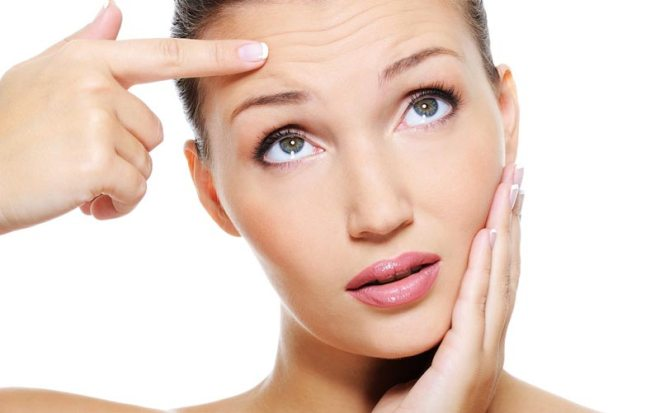

Estetska medicina
Budite još lepši, mlađi i zdraviji, uz malo truda i za kratko vreme! Savremeni način života ubrzava proces starenja i narušava zdravstveno stanje. Estetska medicina predstavlja skup minimalno invazivnih metoda koje će doprineti prirodnom i negovanom izgledu.
Mezoterapija predstavlja metod (tretman, modul, način lečenja) kojim se aktivne supstance (koje inače ne mogu kroz običnu ljudsku poru da uđu u kožu) injektiraju u sam mezoderm.
Mezoderm predstavlja središnji sloj kože koji je odgovoran za niz fizioloških i metabolitičkih funkcija kože, a svojevremeno predstavlja pravu refleksiju zdrave i negovane kože koja se ogleda na nivou epiderma. To znači: zdrav i negovan mezoderm - zdrava koža.
Sam tretman mezoterapije je bezbolan.
Mezoterapija, kao procedura, može se primeniti na licu, dekolteu, šakama, stomaku, butinama i generalno na svim kritičnim mestima gde bismo hteli da postignemo određeni stepen poboljšanja kože.
Mezoderm predstavlja središnji sloj kože koji je odgovoran za niz fizioloških i metabolitičkih funkcija kože, a svojevremeno predstavlja pravu refleksiju zdrave i negovane kože koja se ogleda na nivou epiderma. To znači: zdrav i negovan mezoderm - zdrava koža.
Sam tretman mezoterapije je bezbolan.
- Ciljevi mezoterapije su:
- poboljšanje kvaliteta kože;
- stimulacija i indukcija kolagena i elastina;
- površna i duboka hidratacija kože;
- održavanje tena, turgora i tonusa kože;
- podizanje lokalnog kožnog imuniteta.
Mezoterapija, kao procedura, može se primeniti na licu, dekolteu, šakama, stomaku, butinama i generalno na svim kritičnim mestima gde bismo hteli da postignemo određeni stepen poboljšanja kože.
Hiperhidroza predstavlja oboljenje od kojeg boluje 20% svetske populacije. Hiperhidroza je lučenje znoja u količinama većim od potrebne da se organizam rashladi. Najčešće je prisutna na dlanovima, stopalima i ispod pazuha. Pored toga što ometa osobu u obavljanju svakodnevnih aktivnosti, može izazvati društvenu anksioznost i neprijatnosti. Uzrok hiperhidroze leži u regulaciji telesne temperature znojnim žlezdama. Površnom aplikacijom botoksa u kritičnim regijama, rešava se problem hiperhidroze.
Poželjno je da se pre tretmana reguliše ishrana klijenta, što podrazumeva izbacivanje prvenstveno začina iz ishrane. Treba izbegavati alkoholna pića, cigarete, gazirana pića, kao i “brzu hranu” koja povećava salivaciju znoja, jer organizam pokušava da iz sebe izbaci toksične i nepotrebne materije. Poželjno je skinuti dlake ako se radi pazuh. Regija se dezinfikuje i potom aplikuje određena doza botoksa koji blokira nerve koji aktiviraju znojne žlezde. Tretman je kratak i bezbolan. Klijent se odmah vraća svojim aktivnostima, uz preporuku da tog dana izbegava fizičke poslove i nagle pokrete, kao i da se ne tušira tog dana. Tretman se preporučuje ljudima koji se aktivno bave sportom, kao i ljudima koji se bave takvom vrstom posla da uvek moraju da poštuju određena pravila oblačenja, ponašanja i izgleda.
Poželjno je da se pre tretmana reguliše ishrana klijenta, što podrazumeva izbacivanje prvenstveno začina iz ishrane. Treba izbegavati alkoholna pića, cigarete, gazirana pića, kao i “brzu hranu” koja povećava salivaciju znoja, jer organizam pokušava da iz sebe izbaci toksične i nepotrebne materije. Poželjno je skinuti dlake ako se radi pazuh. Regija se dezinfikuje i potom aplikuje određena doza botoksa koji blokira nerve koji aktiviraju znojne žlezde. Tretman je kratak i bezbolan. Klijent se odmah vraća svojim aktivnostima, uz preporuku da tog dana izbegava fizičke poslove i nagle pokrete, kao i da se ne tušira tog dana. Tretman se preporučuje ljudima koji se aktivno bave sportom, kao i ljudima koji se bave takvom vrstom posla da uvek moraju da poštuju određena pravila oblačenja, ponašanja i izgleda.
Mezoniti su vlakna koja se razgrađuju u koži. 3D mezoniti se pod kožu uvode tankom, dugačkom iglom. Potrebno je od šest do devet meseci da se niti razgrade i za to vreme se oko niti stvara novi kolagen. U odnosu na indikacije pravi se mreža niti i na taj način se zateže koža, uklanjaju se bore i višak kože i koža se može preoblikovati.
Pre tretmana potrebno je u konsultaciji sa lekarom odrediti tačnu regiju koju želite da tretirate. Lekar treba da vas obavesti o pripremi pre tretmana. Pre uvođenja mezoniti nanosi se lokalni anestetik. Uvodi se određen broj igala pod kožu koje se potom vade, a niti ostaju u koži. Rezultati su vidljivi odmah, ali pun efekat se postiže posle mesec dana ili dva meseca. Dobija se potpuno prirodan izgled, bez gubljenja mimike. Mezoniti su pogodne kod osoba koje imaju izražene bore između obrva, oko usta ili na celom licu, kao i kod opuštene kože lica, podbratka, ruku, stomaka i nogu. Takođe, primenjuju se i kod prevencije nastanka bora, ali je ipak preporučljivo za osobe iznad 30 godina.
Osim uklanjanja bora i viška kože, mezonitima se postiže prirodno mlađi izgled. Dovoljan je samo jedan tretman mezonitima da se postigne željeni izgled i moguće je, po potrebi, ponoviti ga posle dve godine.
Pre tretmana potrebno je u konsultaciji sa lekarom odrediti tačnu regiju koju želite da tretirate. Lekar treba da vas obavesti o pripremi pre tretmana. Pre uvođenja mezoniti nanosi se lokalni anestetik. Uvodi se određen broj igala pod kožu koje se potom vade, a niti ostaju u koži. Rezultati su vidljivi odmah, ali pun efekat se postiže posle mesec dana ili dva meseca. Dobija se potpuno prirodan izgled, bez gubljenja mimike. Mezoniti su pogodne kod osoba koje imaju izražene bore između obrva, oko usta ili na celom licu, kao i kod opuštene kože lica, podbratka, ruku, stomaka i nogu. Takođe, primenjuju se i kod prevencije nastanka bora, ali je ipak preporučljivo za osobe iznad 30 godina.
Osim uklanjanja bora i viška kože, mezonitima se postiže prirodno mlađi izgled. Dovoljan je samo jedan tretman mezonitima da se postigne željeni izgled i moguće je, po potrebi, ponoviti ga posle dve godine.
Botoks predstavlja egzogen toksin koji je proizvod anaerobne bakterije Clostridium botulinum. Postoji sedam različitih tipova ovog toksina, koji se razlikuju po mehanizmima intracelularnog delovanja.
Dr Alan Skot je 1973. godine došao do eksperimentalnog zaključka da male doze botulinum toxina tipa A koje se injektiraju u hiperaktivne mišiće dovode do znatnog smanjenja njihovih kontrakcija.
Postoje mnoge zablude u vezi sa botoksom.
Prvo, botoks nije otrov. On je samo izolovan iz bakterijskog zida pomenute bakterije, ali je vrhunskom tehnologijom obrađen i stabilizovan da u malim koncentracijama, stručno aplikovan, izaziva 'peglanje' bora na čelu, oko očiju i između očiju.
Drugo, botoks se ne koristi za popunjavanje nazolabijalnih bora.
Treće, delovanje botoksa nije momentalno. Njegovo delovanje započinje tri dana posle stručne aplikacije, kada botoks radi kapacitetom od 30%, zatim sedam dana kada je botoks odradio 70 % posla i 10-12 dana kada botoks daje 100% svog dejstva u narednih šest meseci.
Četvrto, botoks ne popunjava statičke bore. Zbog toga je i preporučljivo da se tretmani botoksom započnu što ranije, dok pacijenti imaju takozvane dinamičke bore, koje su pliće i lakše ih je popeglati odložiti i usporiti proces starenja.
Dr Alan Skot je 1973. godine došao do eksperimentalnog zaključka da male doze botulinum toxina tipa A koje se injektiraju u hiperaktivne mišiće dovode do znatnog smanjenja njihovih kontrakcija.
Postoje mnoge zablude u vezi sa botoksom.
Prvo, botoks nije otrov. On je samo izolovan iz bakterijskog zida pomenute bakterije, ali je vrhunskom tehnologijom obrađen i stabilizovan da u malim koncentracijama, stručno aplikovan, izaziva 'peglanje' bora na čelu, oko očiju i između očiju.
Drugo, botoks se ne koristi za popunjavanje nazolabijalnih bora.
Treće, delovanje botoksa nije momentalno. Njegovo delovanje započinje tri dana posle stručne aplikacije, kada botoks radi kapacitetom od 30%, zatim sedam dana kada je botoks odradio 70 % posla i 10-12 dana kada botoks daje 100% svog dejstva u narednih šest meseci.
Četvrto, botoks ne popunjava statičke bore. Zbog toga je i preporučljivo da se tretmani botoksom započnu što ranije, dok pacijenti imaju takozvane dinamičke bore, koje su pliće i lakše ih je popeglati odložiti i usporiti proces starenja.
